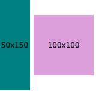

RowLayout QML Type
Identical to GridLayout, but having only one row. More...
| Import Statement: | import QtQuick.Layouts |
| Inherits: |
Properties
- layoutDirection : enumeration
(since QtQuick.Layouts 1.1) - spacing : real
- uniformCellSizes : bool
(since QtQuick.Layouts 6.6)
Detailed Description
To be able to use this type more efficiently, it is recommended that you understand the general mechanism of the Qt Quick Layouts module. Refer to Qt Quick Layouts Overview for more information.
It is available as a convenience for developers, as it offers a cleaner API.
Items in a RowLayout support these attached properties:
- Layout.minimumWidth
- Layout.minimumHeight
- Layout.preferredWidth
- Layout.preferredHeight
- Layout.maximumWidth
- Layout.maximumHeight
- Layout.fillWidth
- Layout.fillHeight
- Layout.alignment
- Layout.margins
- Layout.leftMargin
- Layout.rightMargin
- Layout.topMargin
- Layout.bottomMargin
- Layout.horizontalStretchFactor
- Layout.verticalStretchFactor

RowLayout { id: layout anchors.fill: parent spacing: 6 Rectangle { color: 'teal' Layout.fillWidth: true Layout.minimumWidth: 50 Layout.preferredWidth: 100 Layout.maximumWidth: 300 Layout.minimumHeight: 150 Text { anchors.centerIn: parent text: parent.width + 'x' + parent.height } } Rectangle { color: 'plum' Layout.fillWidth: true Layout.minimumWidth: 100 Layout.preferredWidth: 200 Layout.preferredHeight: 100 Text { anchors.centerIn: parent text: parent.width + 'x' + parent.height } } }
Read more about attached properties here.
See also ColumnLayout, GridLayout, StackLayout, Row, and Qt Quick Layouts Overview.
Property Documentation
layoutDirection : enumeration |
This property holds the layout direction of the row layout - it controls whether items are laid out from left to right or right to left. If Qt.RightToLeft is specified, left-aligned items will be right-aligned and right-aligned items will be left-aligned.
Possible values:
| Constant | Description |
|---|---|
Qt.LeftToRight | (default) Items are laid out from left to right. |
Qt.RightToLeft | Items are laid out from right to left |
This property was introduced in QtQuick.Layouts 1.1.
See also GridLayout::layoutDirection and ColumnLayout::layoutDirection.
spacing : real |
This property holds the spacing between each cell. The default value is 5.
uniformCellSizes : bool |
If this property is set to true, the layout will force all cells to have a uniform size.
Note: This API is considered tech preview and may change or be removed in future versions of Qt.
This property was introduced in QtQuick.Layouts 6.6.
See also GridLayout::uniformCellWidths, GridLayout::uniformCellHeights, and ColumnLayout::uniformCellSizes.